Mga Kuwento ni Lola Pilar
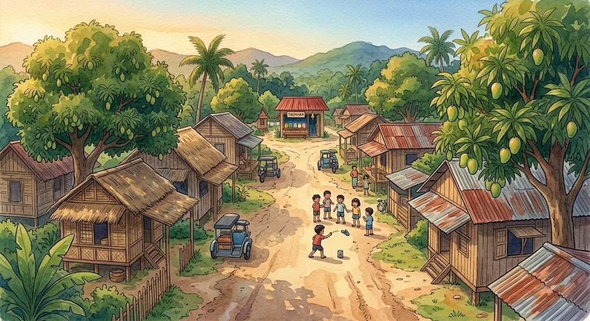
Mga Kuwento ni Lola Pilar Sa dulo ng makipot na kalye sa Barangay Maligaya, may maliit na tindahang may pulang bubong.
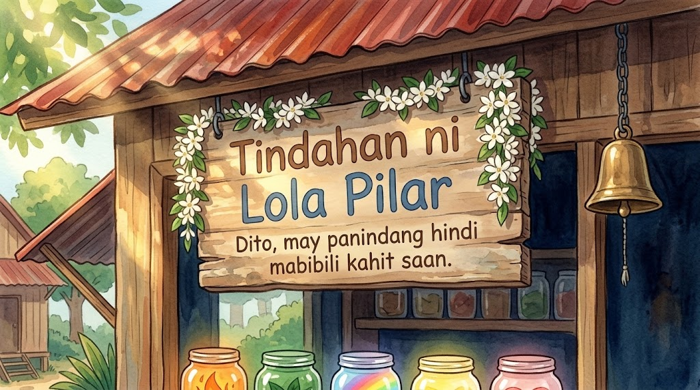
"Tindahan ni Lola Pilar," sabi ng karatula. Sa ilalim nito, may maliit na sulat: "Dito, may panindang hindi mabibili kahit saan."
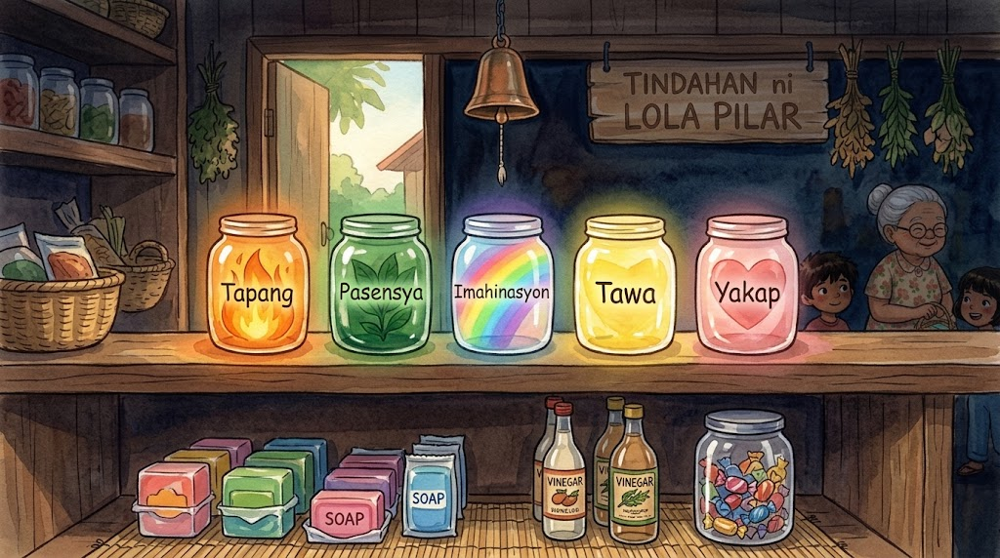
Sa ibabang estante, may sabon, suka, at kendi. Pero sa itaas, may mga garapong kumikinang: Tapang. Pasensya. Tawa. Yakap.
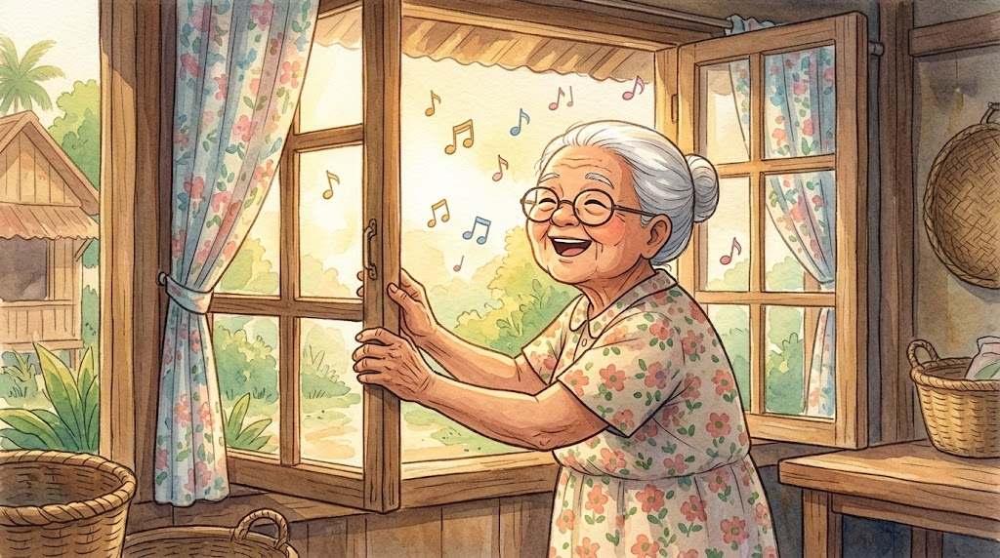
Tuwing umaga, binubuksan ni Lola Pilar ang bintana at kumakanta. "Sino kaya ang unang bata ngayon?"
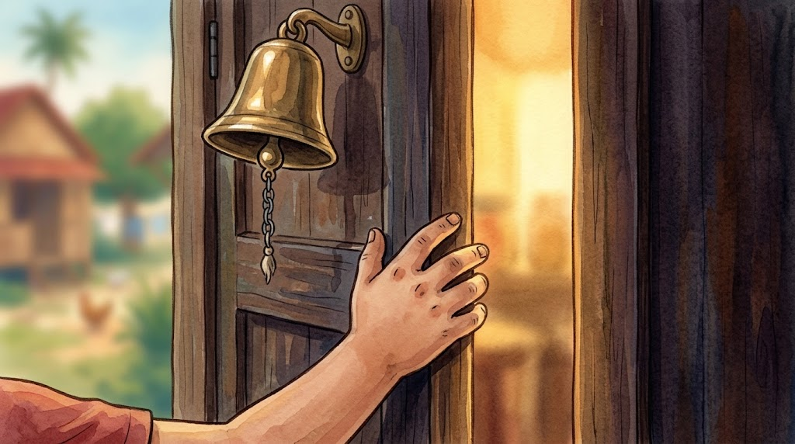
Kring-kring! Tumunog ang kampanilya sa pinto...
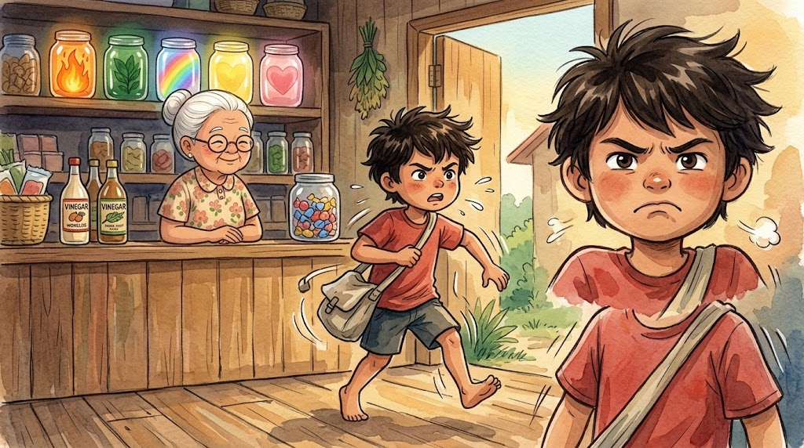
Si Migo ang pinakamabilis na batang kilala ng lahat. Mabilis kumain, mabilis maglakad, mabilis magsapatos. Pero ngayong umaga, nakasimangot siya. "Lola, laging sabi nila, ang bagal ko raw magbasa!"
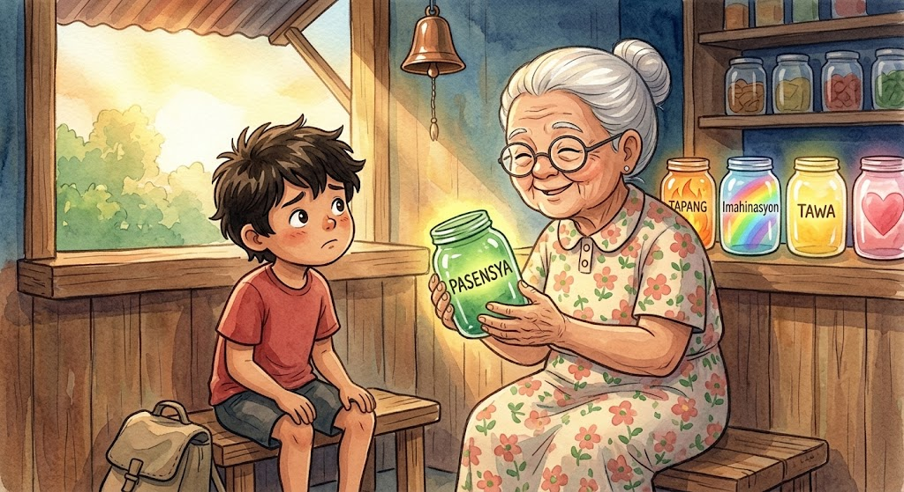
Ngumiti si Lola Pilar. Kinuha niya ang garapon na may nakasulat na "Pasensya." "Upo ka, apo. May ikukuwento ako tungkol kay Pagong."
Si Pagong na Laging Nahuhuli
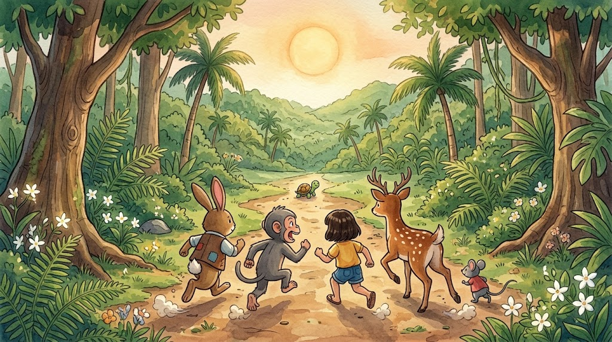
Si Pagong na Laging Nahuhuli.
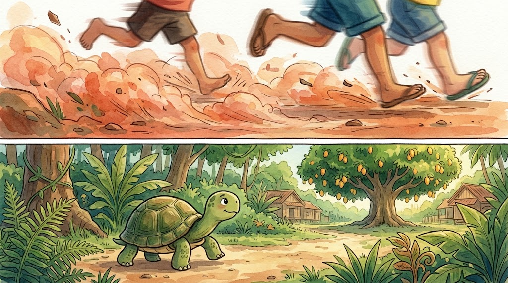
Noong unang panahon, sa gubat ng Sampaguita, may pagong na si Pagong. Siya ang laging huli. Huli sa almusal. Huli sa laro. Huli sa lahat. "Dali, Pagong! Tagal mo naman!" sigaw ng mga kaibigan.
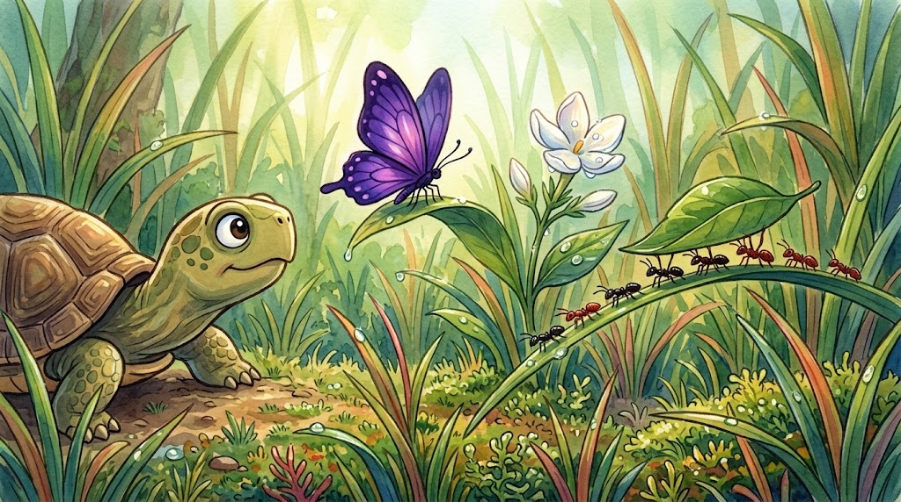
Isang araw, nagkarera ang buong gubat papunta sa puno ng mangga. "Ang unang makarating, siya ang makakakuha ng pinakahinog!" Zoom! Zoom! Zoom! Tumakbo ang lahat. Si Pagong? Dahan-dahan. Isa. Dalawa. Tatlo.
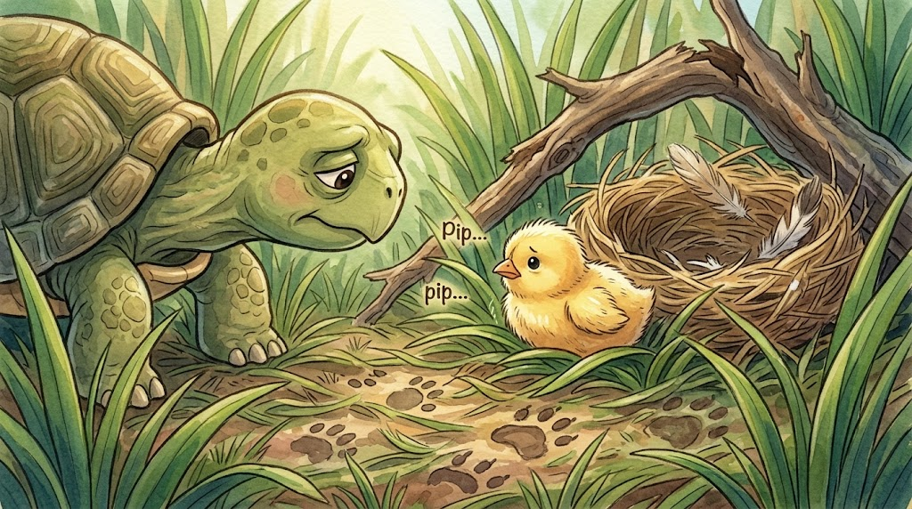
Habang naglalakad siya, nakita ni Pagong ang mga bagay na hindi napansin ng iba: ang paruparong kulay ube, ang bulaklak na kakabukas pa lang, ang mga langgam na magkakasamang nagbubuhat ng dahon. "Ang ganda!" bulong niya.
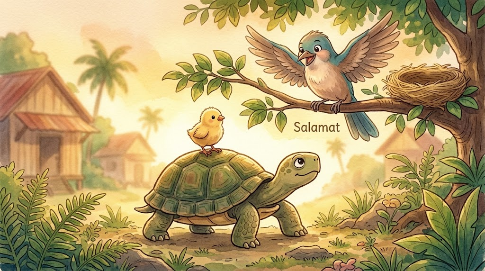
Pagkatapos, may narinig siyang mahinang huni. Pip... pip... Sa ilalim ng damo, may sisiw na nahulog sa pugad! "Dumaan sila rito," bulong ni Pagong, "pero hindi nila narinig."
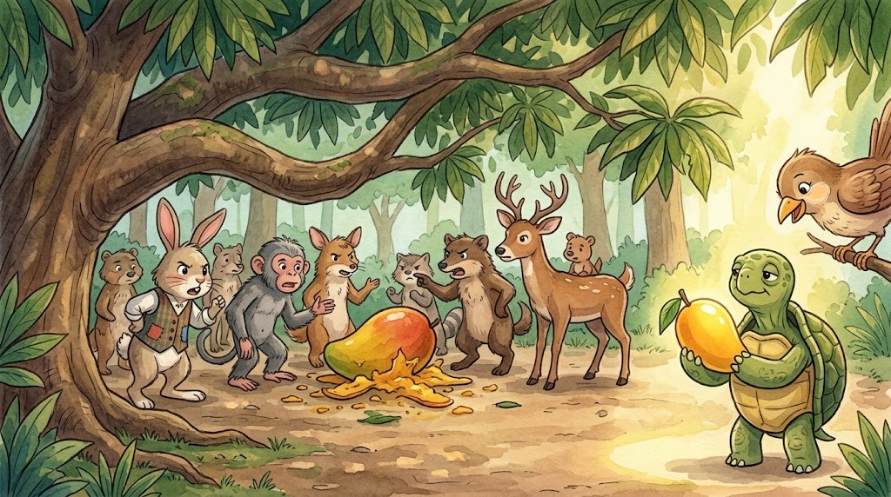
Dahan-dahang inalalayan ni Pagong ang sisiw sa kanyang likod. Dahan-dahan din siyang naglakad pabalik sa puno, hanggang maibalik niya ito sa pugad. "Salamat," huni ng nanay na ibon.
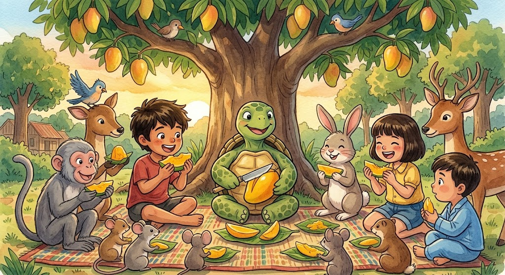
Pagdating ni Pagong sa puno ng mangga, nakaupo na ang lahat, pagod at nag-aaway kung sino ang nauna. Wala na ang pinakahinog, ibinagsak na ng hangin at nadurog. Pero may isang mangga sa tabi ni Pagong: bigay ng nanay na ibon.
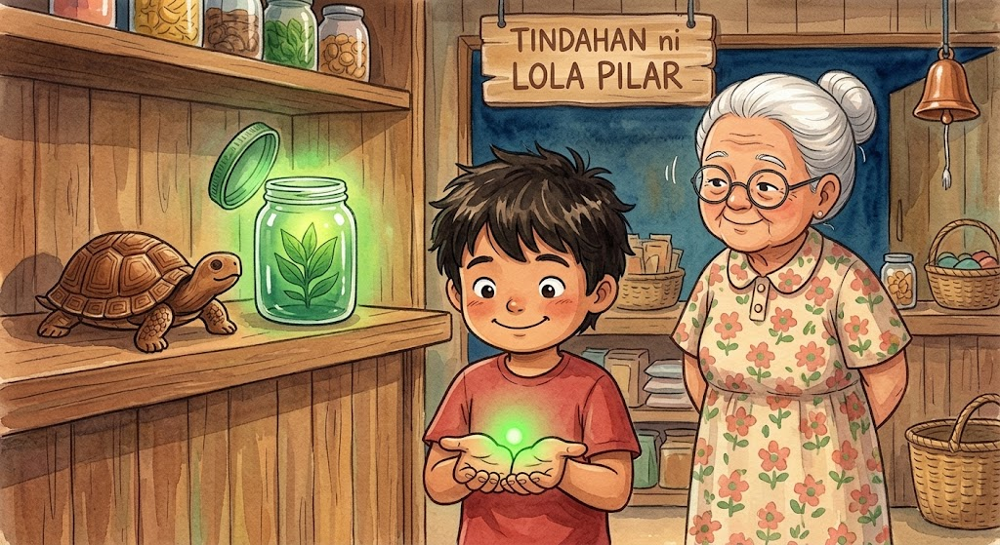
Hinati ni Pagong ang mangga sa lahat. "Mas masarap kapag sabay-sabay," sabi niya. Mula noon, tuwing may lakad ang gubat, sinasabi nila: "Sandali, hintayin natin si Pagong. Siya ang nakakakita ng mga bagay na hindi natin napapansin."
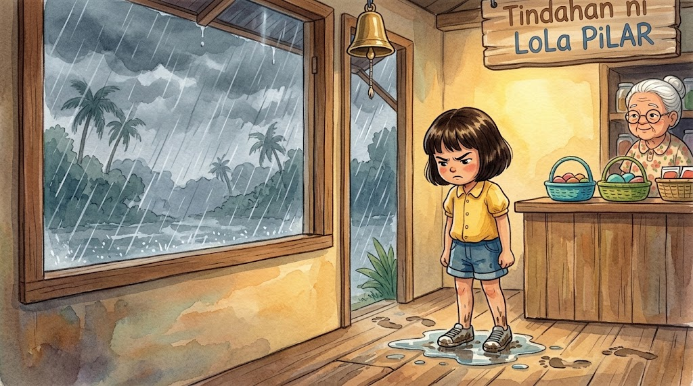
Tumingin si Migo sa garapon. "Lola... puwede bang dahan-dahan din ako minsan?" "Oo naman, apo," ngiti ni Lola. "Ang bawat isa, may sariling bilis."
Ang Lihim ng Sirang Payong
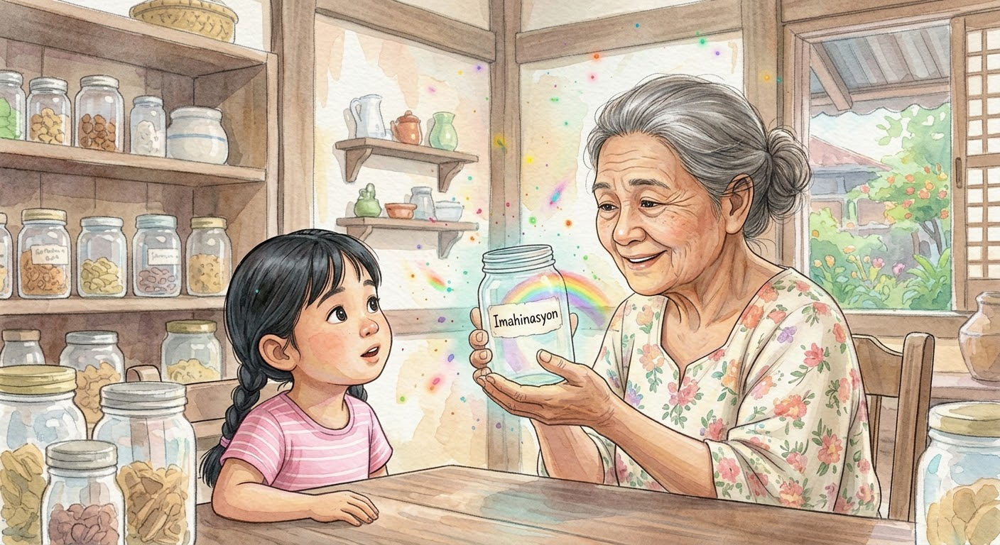
Ang Lihim ng Sirang Payong.
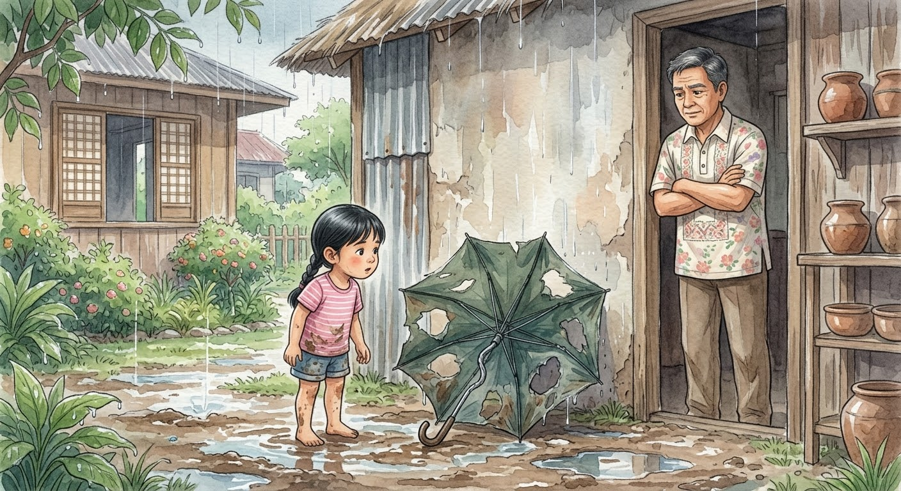
Kinabukasan, umuulan nang malakas. Kring-kring! Pumasok si Nena, basa ang sapatos at nakasimangot. "Lola, ang boring! Hindi ako makalabas, hindi ako makapaglaro!"
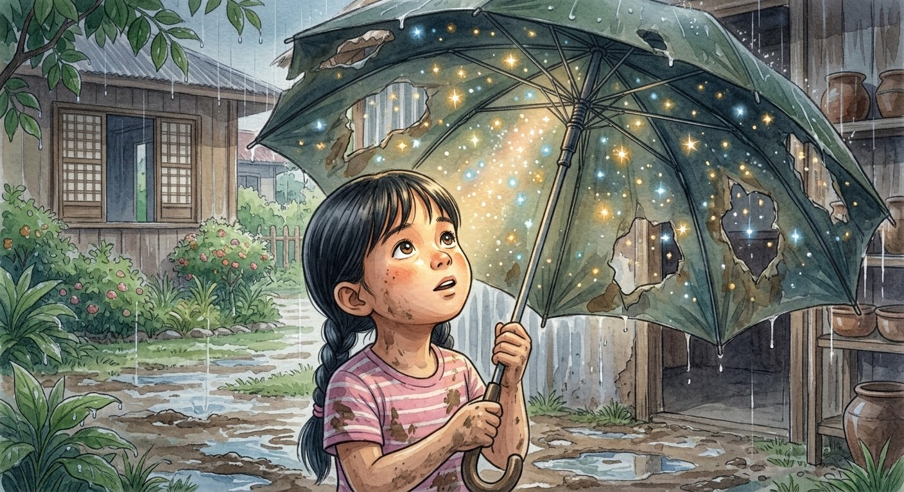
May kinuhang bagong garapon si Lola mula sa itaas: "Imahinasyon." Kumislap ito na parang maliit na bahaghari. "Halika, apo. Ikukuwento ko si Tala at ang sirang payong."
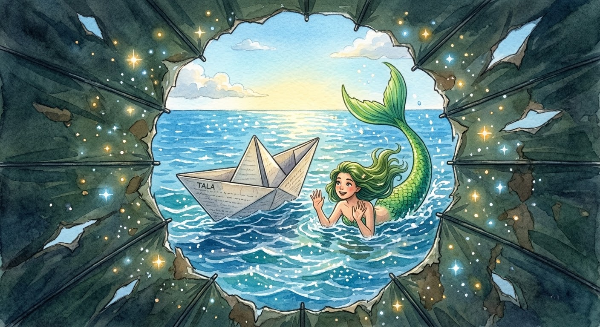
Si Tala ay batang walang magawa tuwing umuulan. Isang hapon, may nakita siya sa likod ng bahay: lumang payong, may punit, may butas, at baluktot ang isang buto. "Sira na 'yan," sabi ng tatay niya. "Itapon mo na."
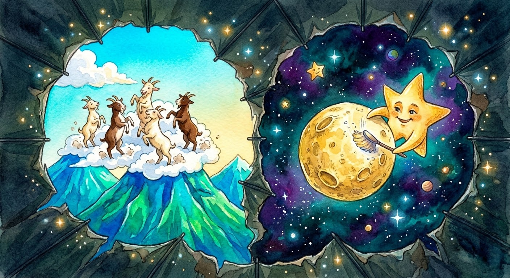
Pero hindi itinapon ni Tala ang payong. Binuksan niya ito, kriiik!, at tumingala. Sa bawat butas, may kumikislap na munting liwanag.
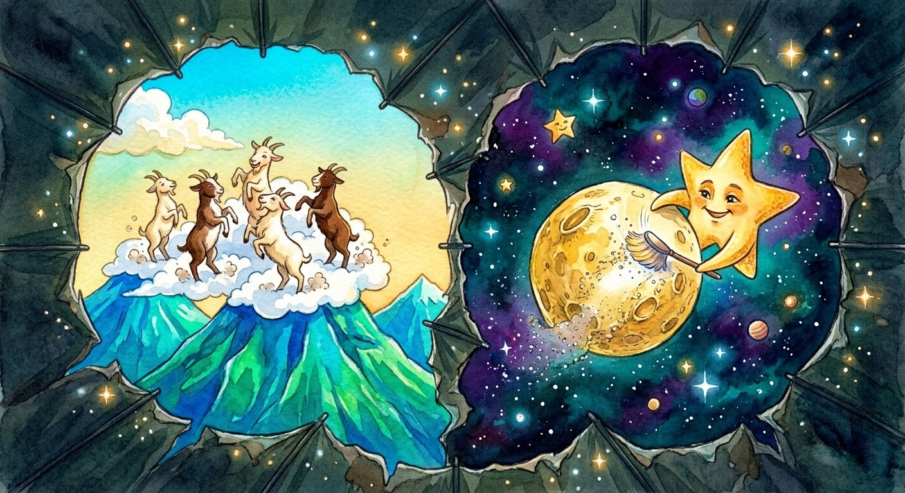
Sumilip siya sa unang butas. Dagat! Naglalayag ang bangkang papel at may sirena na kumakaway. "Hello, Tala!" sigaw ng sirena. "Sakay ka na!"
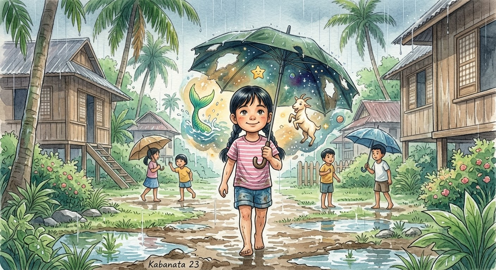
Sumilip siya sa pangalawang butas. Bundok! May mga kambing na nagsasayaw sa ulap. Sa pangatlo, kalawakan! May bituin na nagpapahid ng alikabok sa buwan.
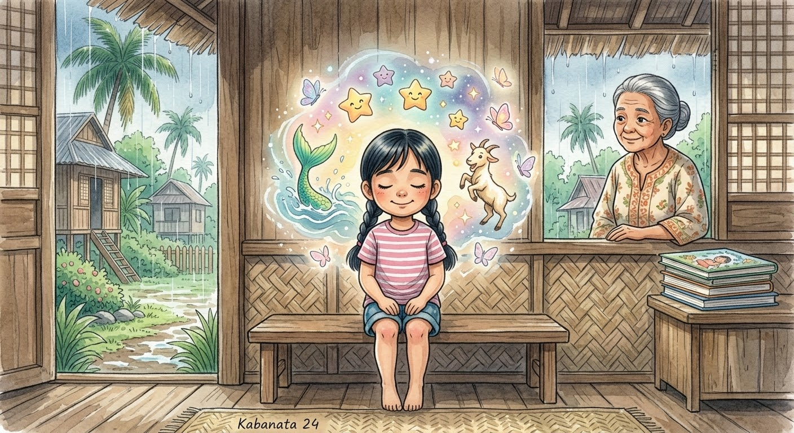
Buong hapon, naglakbay si Tala. Hindi niya namalayang tumila na ang ulan. Pagsara niya ng payong, nakita niyang nakangiti ang tatay sa pinto. "Saan ka galing?" "Sa dagat, bundok, at buwan, Tay!"
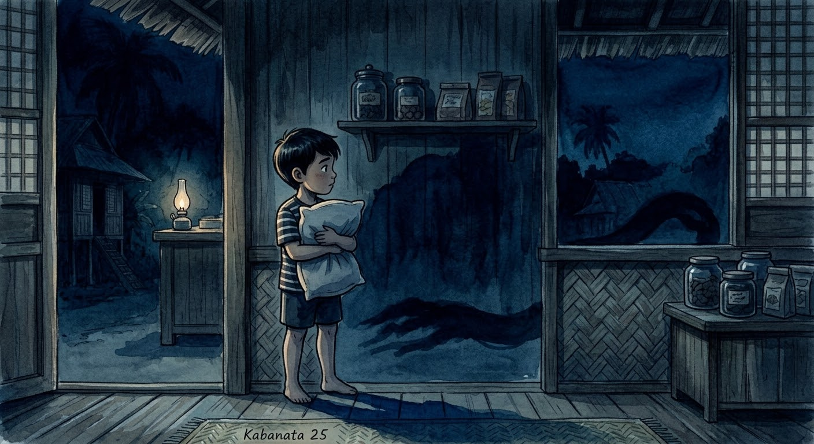
Kinabukasan, umulan ulit. Pero hindi na nagreklamo si Tala. Kinuha niya ang sirang payong, at nagsimula ang bagong lakbayin. Ang lihim? Hindi ang payong ang mahiwaga. Ang mahiwaga ay ang taong marunong mangarap.
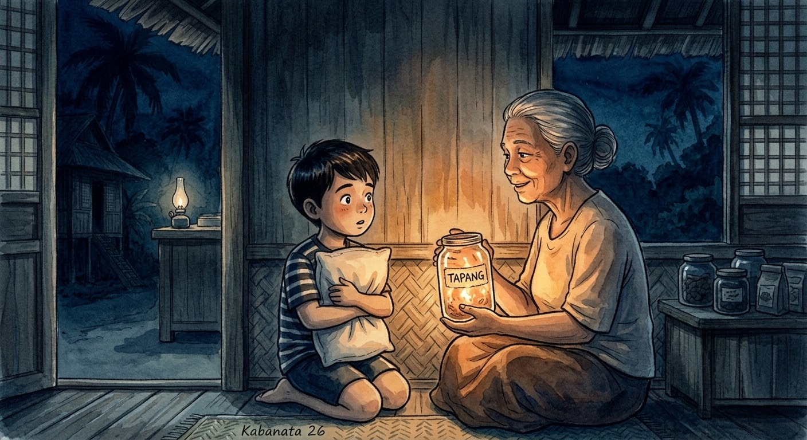
Tumingin si Nena sa bintana. Patak, patak, patak ng ulan. "Lola... puwede ba akong humiram ng payong?" Ngumiti si Lola. "Hindi mo kailangan ng payong, apo. Ipikit mo lang ang mata mo."
Si Tikbalang na Takot sa Dilim
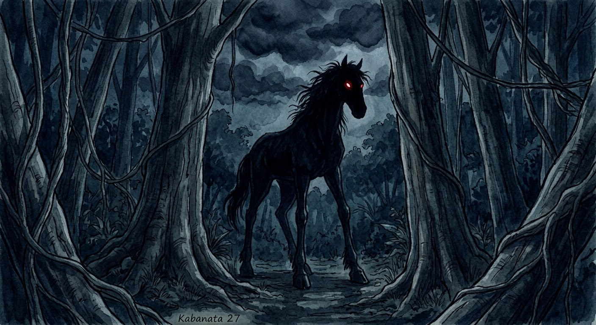
Si Tikbalang na Takot sa Dilim
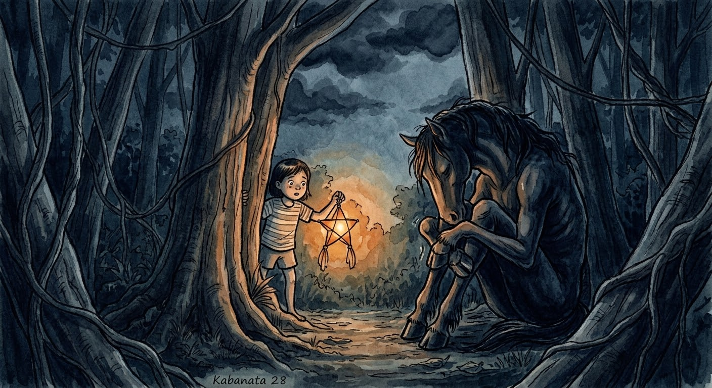
Gabi na, pero hindi pa umuuwi si Dodong. Nakatayo siya sa may pinto, nakatingin sa madilim na kalye. "Lola, ayoko pong matulog nang patay ang ilaw. Baka po may halimaw."
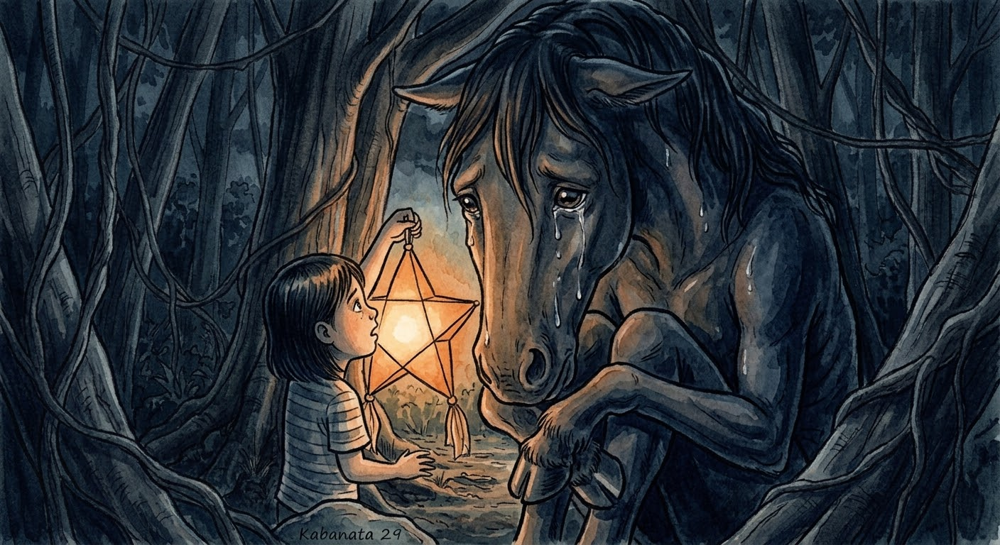
Kinuha ni Lola Pilar ang garapon na may nakasulat na "Tapang." Marahan itong kumislap, parang munting apoy. "Ikukuwento ko sa 'yo si Tikbalang, apo. Hindi siya ang inaakala mo."
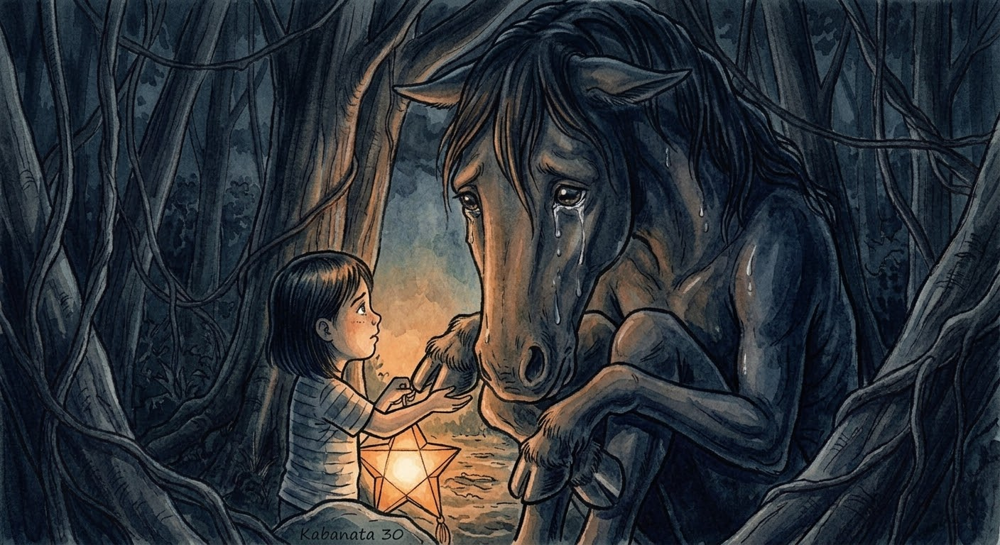
Sa gubat ng Sampaguita, may Tikbalang na si Tikbo. Mataas siya, mahaba ang binti, at may mga matang pula. Takot sa kanya ang lahat ng naliligaw sa gabi.
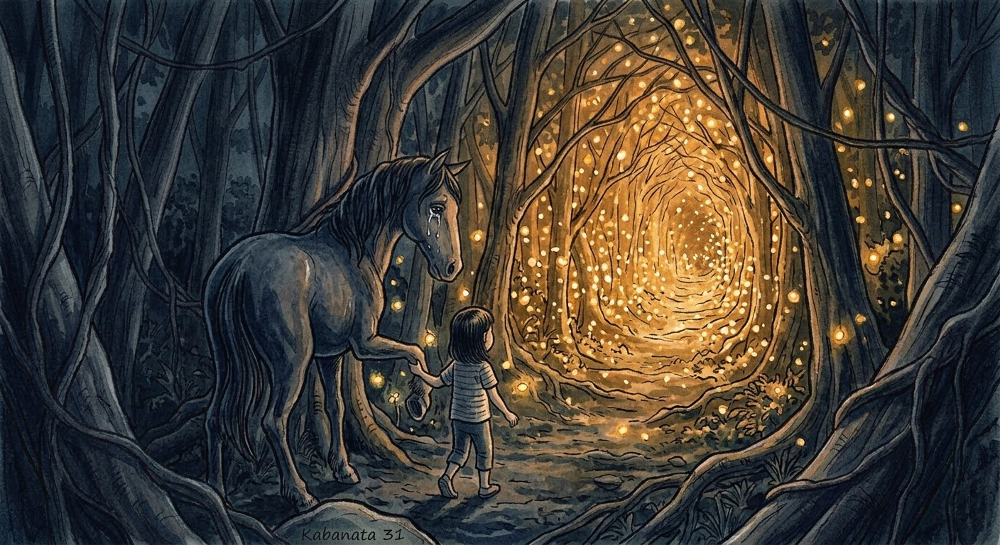
Pero isang gabi, nang humangin at namatay ang buwan, narinig ng batang si Ana ang mahinang hikbi sa likod ng puno. Sumilip siya. Si Tikbo! Nakayuko, nanginginig, hawak ang sarili niyang mga tuhod.
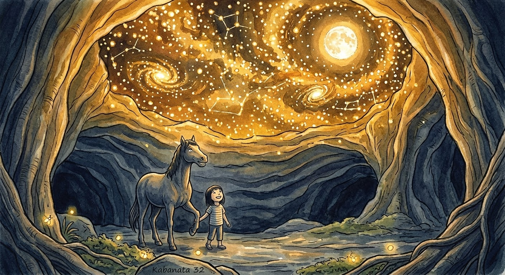
"B-bakit ka umiiyak?" tanong ni Ana. "A-ayoko sa dilim," bulong ni Tikbo. "Tuwing gabi, nagmumukha akong nakakatakot para walang lumapit sa akin. Pero ako ang pinakatakot."
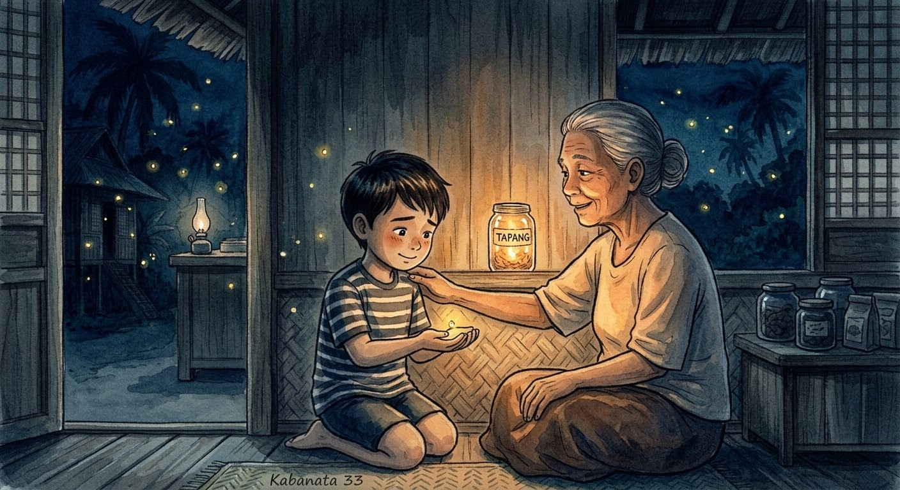
Nagulat si Ana. Natakot din siya sa simula. Pero kita niyang totoo ang takot ni Tikbo. "Takot din ako minsan," sabi niya. "Halika, samahan kita."
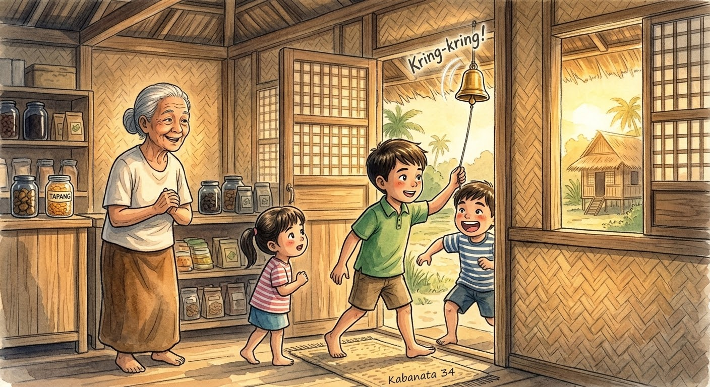
Naglakad silang dalawa sa dilim, magkahawak-kamay. Sa bawat hakbang, may nadidiskubre silang munting liwanag: alitaptap na lumilipad sa paligid nila.
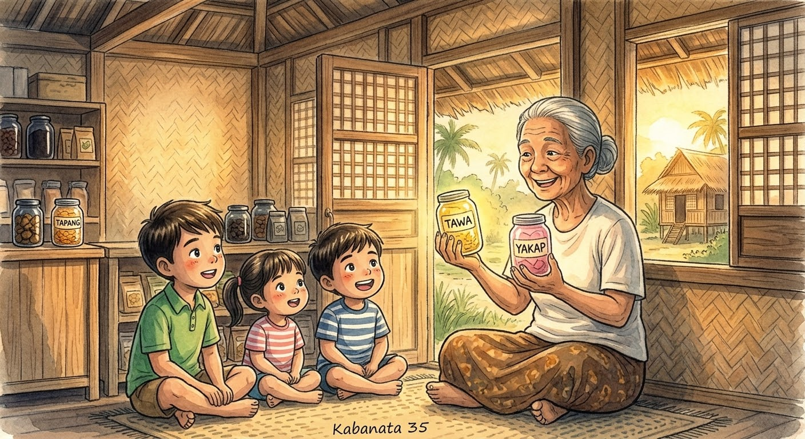
Pagdating nila sa kuweba ni Tikbo, nagsalubong ang mga alitaptap sa itaas, at lumiwanag ang buong kisame. "Hindi pala ako mag-isa sa dilim," ngiti ni Tikbo.
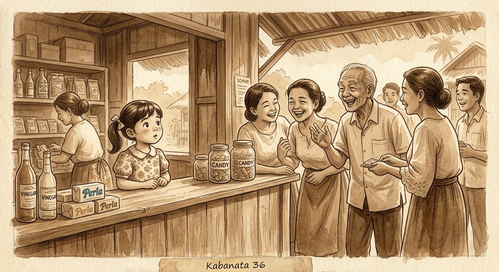
"Lola, takot pa rin po ako," bulong ni Dodong. "Okay lang 'yon, apo," sabi ni Lola. "Ang tapang ay hindi ang walang takot. Ang tapang ay ang tumuloy kahit natatakot, at hindi nahihiyang humingi ng kasama." Ngumiti si Dodong. Isang maliit na ilaw ang kumislap sa kanyang palad.
Ang Tindahan ni Lola Pilar
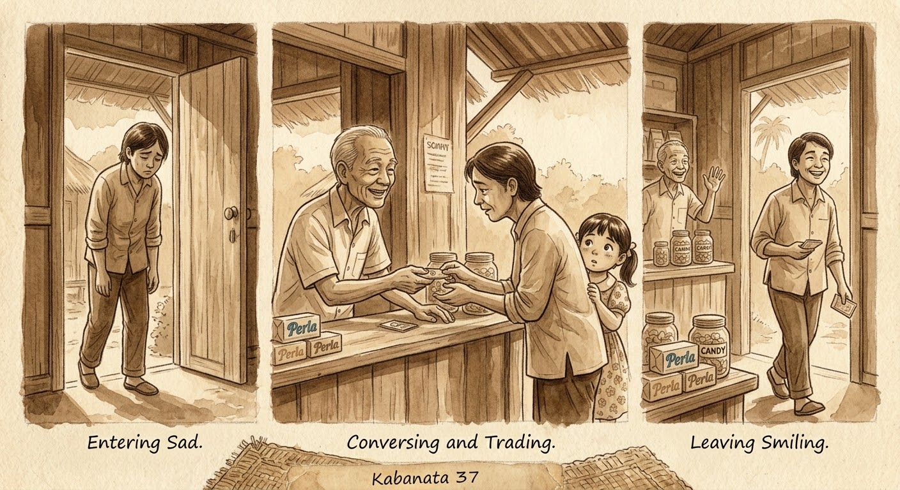
Ang Tindahan ni Lola Pilar
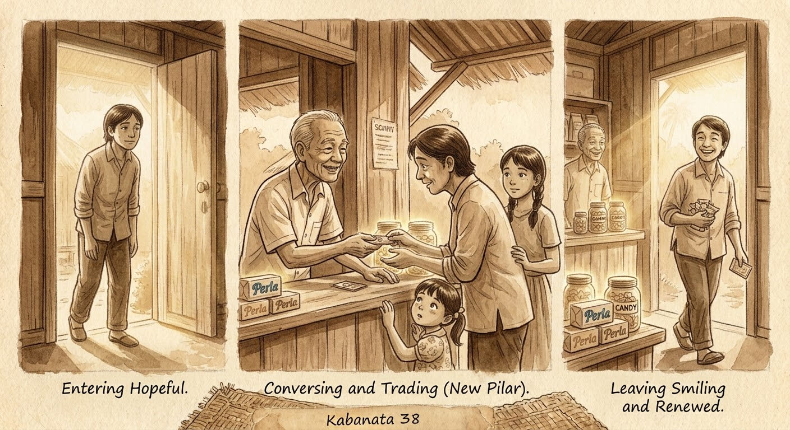
Kinabukasan, sabay-sabay na dumating sina Migo, Nena, at Dodong. Kring-kring! Kring-kring! Kring-kring! "Lola, may kuwento po ba kayo tungkol sa inyo?"
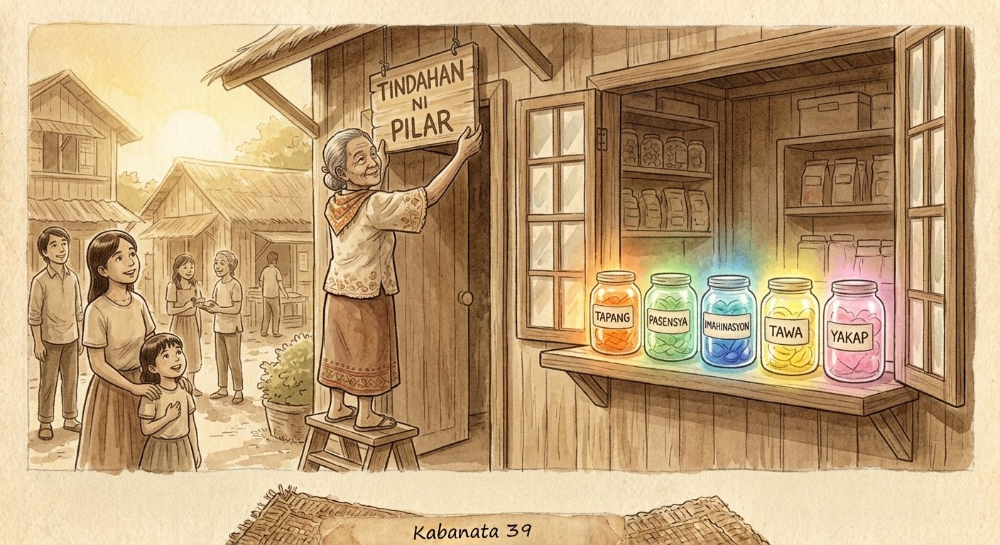
Ngumiti si Lola Pilar. Binuksan niya ang dalawang natitirang garapon: "Tawa" at "Yakap." "Sige, mga apo. Ito ang kuwento ng unang araw ng tindahan."
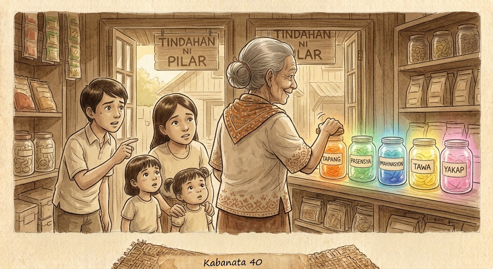
Noong bata pa si Pilar, maliit lang ang tindahan ng nanay niya. Sabon, suka, at kendi lang ang paninda. Isang araw, nagtanong si Pilar: "Nay, bakit parang hindi nauubos ang mga tao rito?"
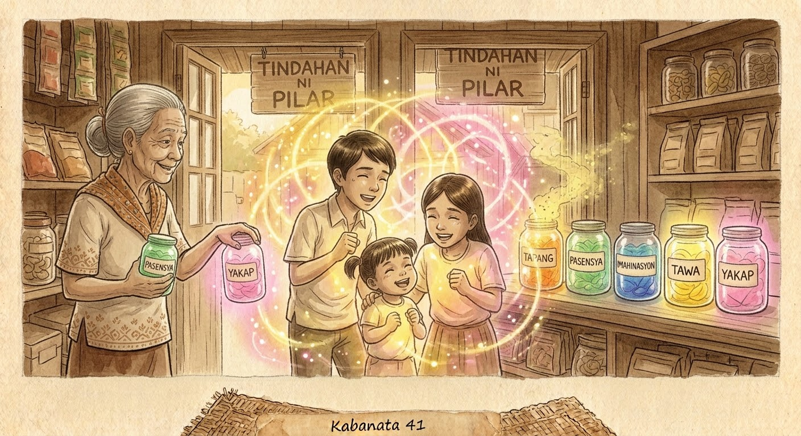
Napansin ni Pilar na hindi lang sabon ang binibili ng mga tao. May pumapasok na malungkot, lumalabas na nakangiti. May pumapasok na pagod, lumalabas na gumaan.
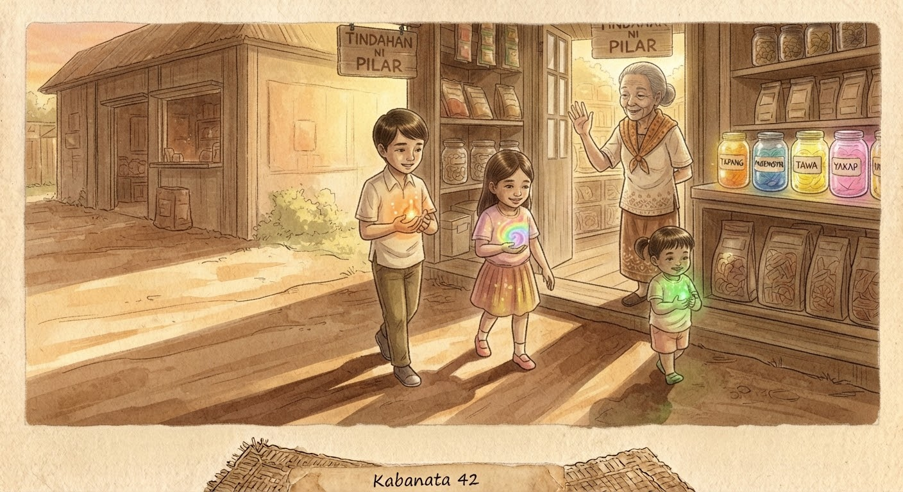
"Nay, ano po ba talaga ang binebenta natin?" Ngumiti ang nanay. "Anak, ang tunay na paninda ay hindi nakikita. Tawa para sa mabigat na araw. Yakap para sa mag-isa. Kapag ibinigay mo, hindi ito nauubos, lalo pang dumarami."
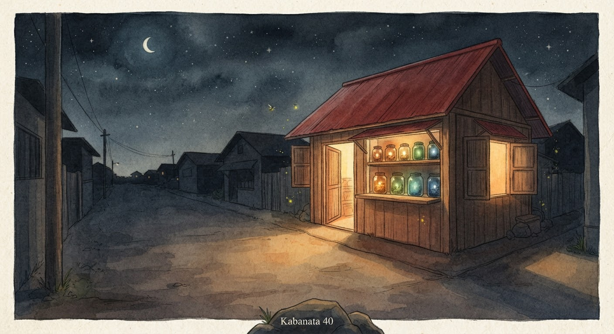
Kaya nang lumaki si Pilar, binuksan niya ang sarili niyang tindahan. Sa itaas na estante, inilagay niya ang mga garapon: Tapang. Pasensya. Imahinasyon. Tawa. Yakap. At para kay Pilar, sila ang pinakamahahalagang paninda.

IKAAPAT NA KUWENTO:"Ang Kutsarang Nahulog sa Lupa"

Isang tanghali, may bumagsak sa damuhan ng barangay. Kling! Isang makintab na kutsara. Ang pangalan niya ay Kutsarang Kiko.

Galing si Kiko sa kusina ng bahay. Nahulog siya sa bintana habang naghuhugas ng pinggan ang nanay ni Migo. At walang nakapansin na wala na siya.

“Nasaan ako?” tanong ni Kiko, at luminga-linga. Wala siyang nakitang sabaw. Wala siyang nakitang kanin. “Para saan pa ako dito? Ang trabaho ko ay magsandok.”

Nakahiga si Kiko sa damuhan, malungkot at tahimik. “Wala na akong silbi sa lupa,” bulong niya. “Ang kutsara ay para sa kusina lang.”

Lumapit sina Langgam Lita at Bubuyog Buboy. “Kiko, ang kintab mo!” sabi ni Lita. “Pero para saan ka ba talaga?” tanong ni Buboy.

“Para magsandok ng sabaw,” sagot ni Kiko. “Sabaw? Wala kaming sabaw dito,” sabi ni Lita. “Pero marami kaming ibang kailangan,” dagdag ni Buboy.

Dumating si Kapitan Susô na may dalang maliit na tasa ng tubig. “Kiko, subukan mong gamitin ang katawan mo sa ibang paraan.” Napaisip si Kiko.

Binaligtad ni Kiko ang sarili, at naging parang maliit na bangka. Isinakay niya ang tatlong langgam, at tumawid sila sa isang malaking sapa. “Wow! Ang galing!” sigaw nila.

Pagkatapos, ginamit siya ng mga bubuyog para magsalok ng nektar. Ginamit din siya ng mga kuhol bilang pahingahan sa init ng araw. Napakaraming gamit niya, na hindi niya alam noon.

“Kiko, napakahalaga mo pala,” sabi ni Lita. “Hindi lang sa kusina, kundi sa bawat lugar. ”Napangiti si Kiko, at kumislap pa ang katawan niya.

Kinagabihan, bumalik ang nanay ni Migo para hanapin ang kutsara. Nakita niya itong kumikislap sa damuhan, at pinulot niya ito. “Nandito ka pala!” sabi niya, at dinala siya pauwi.

Sa kusina, nakahanay si Kiko kasama ang iba pang kubyertos. Pero iba na ang kaniyang pakiramdam. Alam na niyang may silbi siya saan man mapunta.

At ngayon ay ang ating panghuling kuwento: "Ang Bubuyog na Laging Nagmamadali"

Sa barangay, may bubuyog na nagngangalang Buboy. Pinakamabilis siyang lumipad sa lahat. Zzzoom! Zzzoom! Laging may hinahabol.

“Hindi ako puwedeng magtagal!” sabi niya tuwing umaga. “Maraming kailangang gawin! Kailangang matapos agad!” At lilipad na naman siya, mabilis na mabilis.

Sa sobrang bilis, wala siyang napapansin. Hindi niya nakikita ang hamog sa mga dahon. Hindi niya naririnig ang awit ng mga kuliglig.

Isang umaga, tinawag siya ni Langgam Lita. “Buboy, tingnan mo! Ang ganda ng sikat ng araw!” “Wala akong oras!” sagot ni Buboy, at lumipad na.

Dumaan siya sa hardin, at nilampasan ang mga bulaklak. Pula, dilaw, at lila, pero hindi niya tiningnan. “Mamaya na!” sabi niya, kahit hindi niya alam kung kailan iyon.

Biglang may nakita siyang bagay sa gilid ng mata niya. Isang munting bulaklak na kulay rosas, nakatago sa likod ng bato. Muntik na niya itong malampasan.

Huminto si Buboy. Zzzt! Ang bilis ng preno niya. Dahan-dahan siyang lumapit sa bulaklak. Mabango. Malambot. Parang bulong ng umaga.

“Matagal na pala akong dumadaan dito,” bulong ni Buboy. “Pero ngayon lang kita nakita.” “Ilang bulaklak pa kaya ang nalampasan ko?”

Umupo siya sa gilid ng bulaklak at humigop ng nektar. Napakatamis. Napakasarap. Doon niya naramdaman kung gaano siya pagod.

Lumapit si Kapitan Susô, mabagal at sigurado. “Buboy, minsan ang pinakamagandang bagay,” “ay nakikita lang kapag dahan-dahan ka.”

Mula noon, natutunan ni Buboy na huminto at tumingin. Nakita niya ang hamog, narinig ang mga kuliglig, at nilasap ang araw. Mas masaya pala ang buhay kapag hindi laging nagmamadali.

Sa barangay, nagtipon ang lahat sa ilalim ng dahon ng gabi. “Tapos na ang mga kuwento namin ngayon,” bulong ni Kapitan Susô. “Hanggang sa susunod, mga kaibigan.” Maraming salamat sa pakikinig!